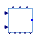
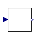

Base classes for renewable energy generator/converter models from PSSE
This package contains the base class (BaseREGC) component used in the REGCA1 component, as well as the Low Voltage Active Current Management (LVACM) and the Low Voltage Power Logic (LVPL).
Extends from Modelica.Icons.BasesPackage (Icon for packages containing base classes).
| Name | Description |
|---|---|
| BaseREGC | Base renewable generator/converter for PSSE models |
| LVACM | Low Voltage Active Control Management |
| LVPL | Low Voltage Power Logic |

OpenIPSL.Electrical.Renewables.PSSE.InverterInterface.BaseClasses.BaseREGCBase renewable generator/converter for PSSE models
This component is the base class for the inverter components from the InverterInterface sub-package.
The modelling of such devices is based, mainly, on the following reference:
Siemens: "PSS®E Model Library" [PSSE-MODELS].
Extends from OpenIPSL.Electrical.Essentials.pfComponent (Partial model containing all the parameters for entering power flow data).
| Name | Description |
|---|---|
| Power flow data | |
| M_b | Machine base power [V.A] |
| S_b | System base power [V.A] |
| V_b | Base voltage of the bus [V] |
| fn | System frequency [Hz] |
| P_0 | Initial active power [W] |
| Q_0 | Initial reactive power [var] |
| v_0 | Initial voltage magnitude [1] |
| angle_0 | Initial voltage angle [rad] |
| displayPF | Display power flow: |
| Input Parameters | |
| Tg | Converter time constant [s] |
| rrpwr | Low Voltage Power Logic (LVPL) ramp rate limit [1/s] |
| Brkpt | LVPL characteristic voltage 2 [1] |
| Zerox | LVPL characteristic voltage 1 [1] |
| Lvpl1 | LVPL gain [1] |
| Volim | Voltage limit for high voltage reactive current management [1] |
| lvpnt1 | High voltage point for low voltage active current management [1] |
| lvpnt0 | Low voltage point for low voltage active current management [1] |
| Iolim | Current limit for high voltage reactive current management (specified as a negative value) [1] |
| Tfltr | Voltage filter time constant for low voltage active current management [s] |
| Khv | Overvoltage compensation gain used in the high voltage reactive current management |
| Iqrmax | Upper limit on rate of change for reactive current [1/s] |
| Iqrmin | Lower limit on rate of change for reactive current [1/s] |
| Parameter mask | |
| enableS_b | Enable S_b in parameter list |
| enableV_b | Enable V_b in parameter list |
| enablefn | Enable fn in parameter list |
| enableP_0 | Enable P_0 in parameter list |
| enableQ_0 | Enable Q_0 in parameter list |
| enablev_0 | Enable v_0 in parameter list |
| enableangle_0 | Enable angle_0 in parameter list |
| enabledisplayPF | Enable displayPF in parameter list |
| Controls | |
| Lvplsw | Enable (true) or disable (false) low voltage power logic. |
| Name | Description |
|---|---|
| p | |
| Iqcmd | Imaginary Command Current |
| Ipcmd | Real Command Current |
| IQ0 | Initial Reactive Power |
| IP0 | Initial Active Power |
| V_0 | Initial Terminal Voltage Magnitude |
| q_0 | Initial Reactive Power |
| p_0 | Initial Active Power |
| V_t | Terminal Voltage Magnitude |
| Pgen | Active Power injection |
| Qgen | Reactive Power injection |

OpenIPSL.Electrical.Renewables.PSSE.InverterInterface.BaseClasses.LVACMLow Voltage Active Control Management
In the inverter inteface model block diagram there are two blocks labeled, "high-voltage reactive current management" and "low-voltage power logic". These blocks represent logic associated with the dynamic model and the limit in active power injection into the system.
The modelling of such devices is based, mainly, on the following reference:
Siemens: "PSS®E Model Library" [PSSE-MODELS].
| Name | Description |
|---|---|
| lvpnt0 | Low voltage point for low voltage active current management [1] |
| lvpnt1 | High voltage point for low voltage active current management [1] |
| Name | Description |
|---|---|
| y | |
| Vt |
Low Voltage Power Logic
In the inverter inteface model block diagram there are two blocks labeled, "high-voltage reactive current management" and "low-voltage power logic". These blocks represent logic associated with the dynamic model and the limit in active power injection into the system.
The modelling of such devices is based, mainly, on the following reference:
Siemens: "PSS®E Model Library" [PSSE-MODELS].
| Name | Description |
|---|---|
| Brkpt | LVPL characteristic voltage 2 [1] |
| Lvpl1 | LVPL gain [1] |
| Zerox | LVPL characteristic voltage 1 [1] |
| Name | Description |
|---|---|
| y | |
| V |